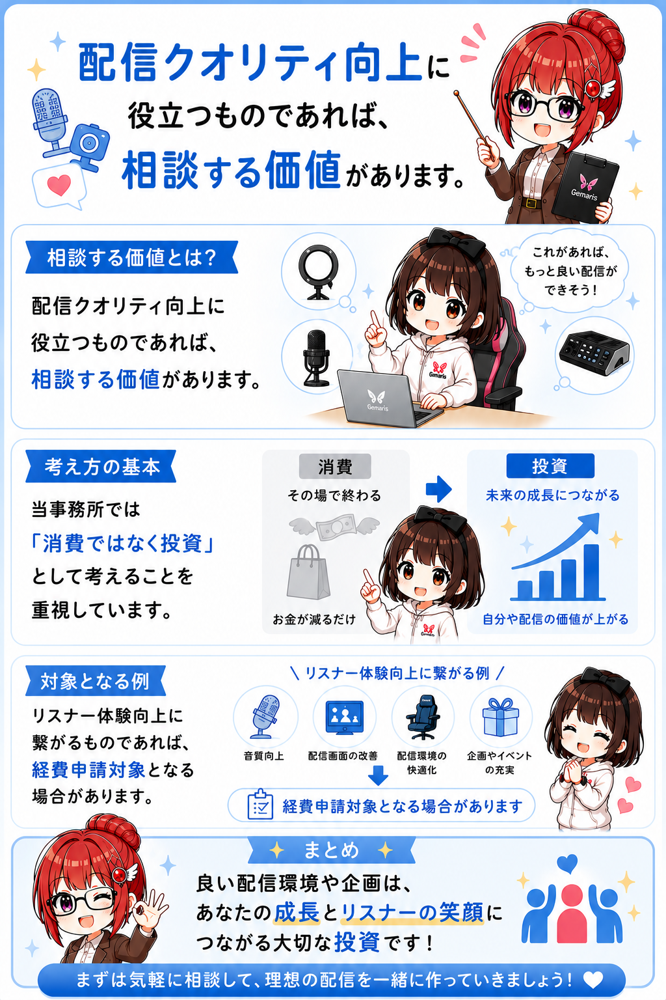
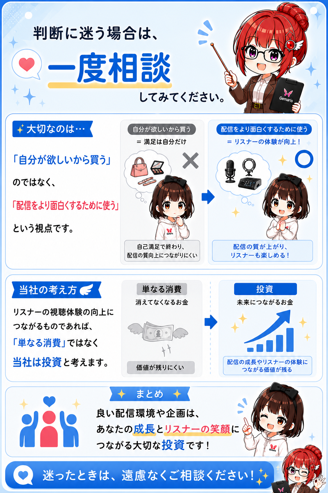
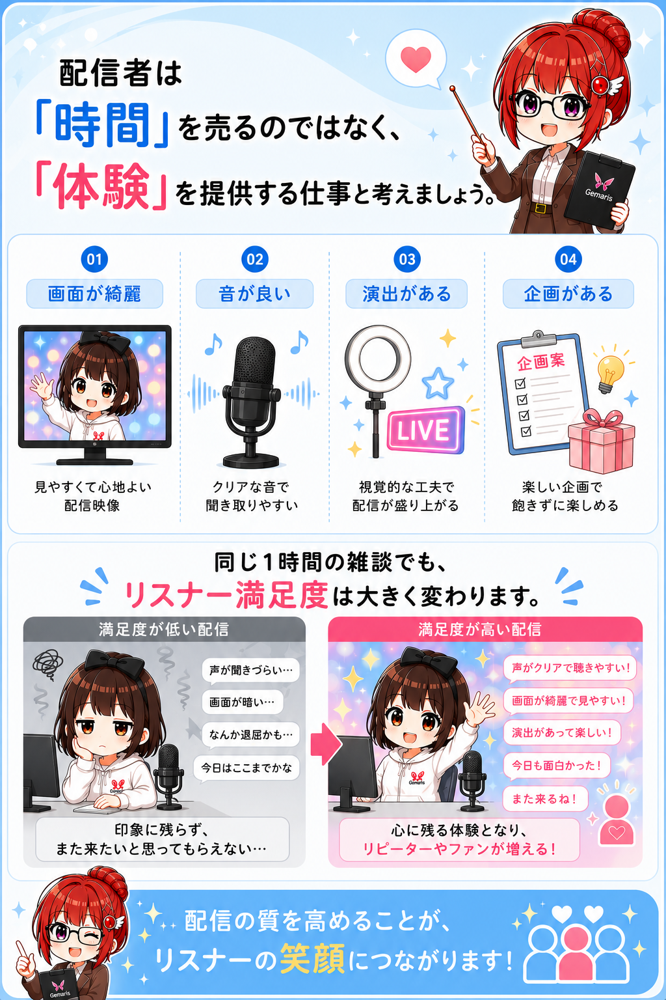
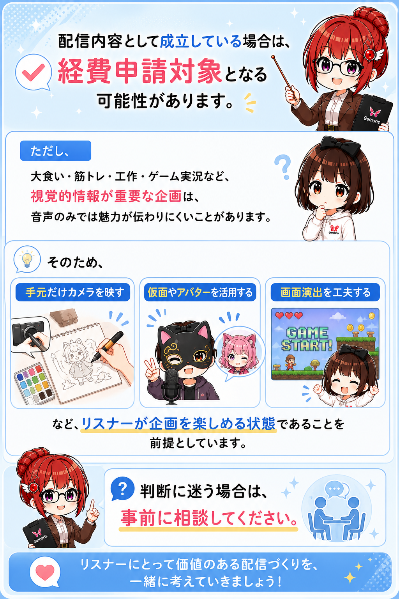

CHAPTER 03
よくある質問（Q&A）
配信活動を行う中で、所属ライバーからよく寄せられる質問をまとめています。
Q. ギフトはどうやったら増えますか？

Q. フォロワー・リスナーはどうやったら増えますか？

Q. 同接が少ないときはどうすればいいですか？

Q. 配信で何を話せばいいかわかりません

Q. 配信を休みたくなったらどうすればいいですか？

Q. 配信で使う機材や小道具は経費になりますか？

Q. どんな時に経費申請をすればいいですか？

Q. なぜ機材や小道具への投資を実施しているのですか？

Q. ラジオ配信で大食いや筋トレ企画は経費になりますか？
